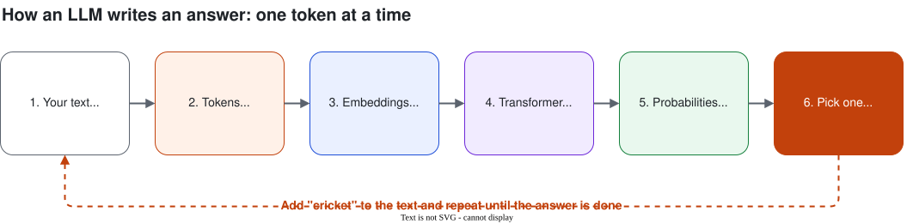

GenAI & Agentic AI Workshop · Day 1 · Session 1
How LLMs Work
What actually happens when you ask ChatGPT a question?
Press → to move · S for speaker notes · F for full screen
The elephant in the room 🐘
Layoffs. Slow fresher hiring. "AI will replace programmers."
Let's be honest about what's happening, and what you can do about it.
Why are there layoffs?
📈 Over-hiring correction
Hired fast in 2020–22, cut back when demand cooled
💸 Cost pressure
Clients cut "nice to have" projects first. IT services feel it directly
🧠 Money moving to AI
GPUs, data centres, AI teams. Other teams shrink to pay for it
🤖 Routine tasks automated
Boilerplate code, simple tests, basic support. Often entry-level work
AI replaces tasks, not whole jobs. The work is changing shape, and AI builders are in demand.
What to improve
🧱 Fundamentals
DSA, DBMS/SQL, OS, networks. You can't judge AI's code without them
🧩 Problem solving
Deciding what to build and how it fits together
🔍 Reviewing code
Spot bugs and security holes in AI output
🗣️ Communication
Prompts, requirements, docs, interviews
🚀 Ownership
Finish and ship. One deployed project > ten tutorials
🏥 Domain knowledge
Finance, health, education... AI is generic, you aren't
What to learn: a roadmap
1. Foundations
Python, Git, SQL, APIs, JSON
→
2. Use AI daily
Chat + coding assistants
→
3. Build with LLMs
Prompts, APIs, RAG
Day 1
→
4. Build agents
Tools, MCP, multi-agent
Day 2
→
5. Production
Cloud, Docker, evals, cost
Goal: leave with a working AI agent on your GitHub.
Quick poll ✋
- Who used ChatGPT, Gemini or Claude this week?
- What did you use it for? Assignments? Code? Resume?
- Has it ever given you a wrong answer confidently?
Today: how does it "know" things, and why does it sometimes get them wrong?
Today's plan
- AI → ML → Deep Learning
- Transformers & attention
- LLM = next-word predictor
- Tokens & embeddings
- Context window
- Temperature
- Hallucination
- Open vs closed models
Notes with all examples and code: see the Session 1 notes page.
AI, ML, DL, LLM: one inside the other
Artificial IntelligenceAny "smart" machine, including old rule-based systems
Machine LearningLearns patterns from examples
Deep LearningNeural networks with many layers
Generative AI / LLMsCreate new text, images, code
Rules vs examples
Traditional programming
Rules + data → answers
if "lottery" in email: spam
Spammer writes "l0ttery" → rule fails 😅
Machine learning
Data + answers → rules
Show 10,000 emails labelled spam / not spam
Model learns the patterns itself ✅
Campus example: past students' CGPA, internships, projects + "placed or not" → model predicts placement chance for a new student.
Deep learning: layers that learn
A neural network = layers of simple maths units. "Deep" = many layers.
→
Middle layers
Eyes, nose, mouth
→
Last layer
"This is your face"
📱 Face unlock: nobody programmed "what an eye looks like". It learned from millions of images.
2017: the Transformer
Google paper: "Attention Is All You Need". The T in GPT = Transformer.
- Old models: read one word at a time, forget the start of long sentences
- Transformer: looks at all words at once
- Attention: works out which words matter for each other
Attention in action
I went to the bank to deposit my scholarship money. → 🏦
We sat on the river bank and watched the sunset. → 🏞️
The dog didn't cross the road because it was too tired. → it = dog
The dog didn't cross the road because it was too busy. → it = road
An LLM is a next-word predictor
"Virat Kohli is famous for playing ___"
Pick a word → add it to the text → predict again → repeat. That's how a whole answer gets written.
The whole loop, in one picture

Key idea
An LLM doesn't look up answers.
It generates the most likely next piece of text,
one token at a time.
"Large" = billions of parameters: the numbers that store what it learned.
From predictor to assistant
1. Pre-training
Read a huge chunk of the internet. Learn to predict the next word.
📚 Reading a whole library
→
2. Instruction tuning
Learn from question → good answer examples.
📝 Practising exam answers
→
3. Human feedback
Humans rank answers. Model learns to be helpful & safe.
🧑🏫 A mentor's feedback
Tokens: how LLMs read
Not words, not letters: tokens (chunks of text).
"I love unbelievable biryani!" (illustrative split)
I love unbelievable biryani!
Rule of thumb: 1 token ≈ 4 characters ≈ ¾ word · 100 tokens ≈ 75 words
Why should you care about tokens?
💰 Cost
APIs charge per token, input + output.
📏 Limits
Each model has a max number of tokens.
🇮🇳 Indian languages
Hindi / Kannada / Tamil often use several times more tokens than English.
🍓 Strange mistakes
"How many r's in strawberry?" Older models said 2. They see strawberry, not letters.
Embeddings: meaning as numbers
Text → list of numbers (a vector)
Similar meaning → close together
king − man + woman ≈ queen
Search by meaning, not keywords
Student asks: "How do I apply for placements?"
| FAQ sentence | Similarity* |
|---|
| What is the process for campus recruitment? | 0.82 ✅ |
| Steps to register with the training & placement cell | 0.78 ✅ |
| Placement of furniture in the new hostel block | 0.21 ❌ |
*Illustrative scores. This is the core of RAG, which we build in Session 4.
Context window: the model's desk
📖 Open-book exam, but your desk fits only N pages. Add more, and the oldest pages fall off.
- Max tokens the model sees at once: instructions + chat history + documents + answer
- Ranges from a few thousand to hundreds of thousands (even 1M) of tokens
- Long chat → old messages dropped → bot "forgets"
- No memory between calls. Apps re-send the whole chat every time (Session 3)
Temperature: safe or creative?
Which temperature when?
| Task | Temperature |
|---|
| Answer from syllabus, extract JSON, write code | Low (0 – 0.3) |
| General chat, explanations | Medium (0.5 – 0.8) |
| Tech fest names, poems, brainstorming | High (0.9 – 1.2) |
Related setting: top-p. Usually tune one, not both.
Hallucination 🤯
A confident, fluent answer that is false or made up.
Prompt: "Summarise the 2019 paper 'Quantum Biryani Optimization' by Dr. R. Sharma, IIT Bombay."
This paper doesn't exist. A model may still write a detailed summary, because that's what summaries look like.
Also common: fake citations, wrong dates, made-up code libraries.
Why it happens, and how to reduce it
Why
- Predicts plausible text, not true text
- No built-in fact database
- Knowledge cutoff date
- Rewarded for answering, not for "I don't know"
Reduce it
- Give it the source (RAG, Session 4)
- Say: "If not in the text, say you don't know"
- Ask for citations, then check them
- Low temperature, tools, human review
Open vs closed models
🔒 Closed
GPT (OpenAI) · Claude (Anthropic) · Gemini (Google)
- Use via app / API only
- ✅ Usually most capable, no hardware
- ❌ Pay per token, data goes to provider
🔓 Open-weight
Llama (Meta) · Mistral · Gemma · Qwen · DeepSeek
- Download & run yourself (Ollama, own server, Groq)
- ✅ Control, privacy, customisable
- ❌ Need GPUs & skills, licences vary
How to choose a model
🎯 Quality
Test on 10–20 of your examples
💰 Cost
Requests × tokens × price
⚡ Speed
Live chat or overnight job?
🔐 Privacy
Can the data leave?
🗣️ Language
Hindi, Kannada, Tamil?
📜 Licence
Commercial use allowed?
💡 Start with the best model to prove it works, then try cheaper ones.
You decide: which model? 🗳️
| Scenario | Pick |
|---|
| 24-hour hackathon prototype | Closed API / free tier |
| Hospital records, data can't leave the building | Open-weight, self-hosted |
| Classify 10 lakh reviews a day | Small, cheap, fast model |
| Support chatbot in Kannada | Test several on real Kannada questions |
Recap: 6 things to remember
- ML learns rules from examples
- Transformers use attention to read words in context
- LLMs predict the next token, again and again
- Tokens = cost & limits · Embeddings = meaning as numbers
- Context window = short-term memory · Temperature = creativity dial
- LLMs hallucinate: ground them with sources
Quick quiz 🧠
- Roughly how many tokens is a 750-word essay? ≈ 1,000
- Why does a chatbot forget the start of a long chat? Context window full
- Extracting marks into JSON: high or low temperature? Low
- Name one way to reduce hallucination. Give sources / RAG
Up next · Session 2
Prompt Engineering
Same model, better answers: zero-shot, few-shot, chain-of-thought, JSON output
Questions? 🙋